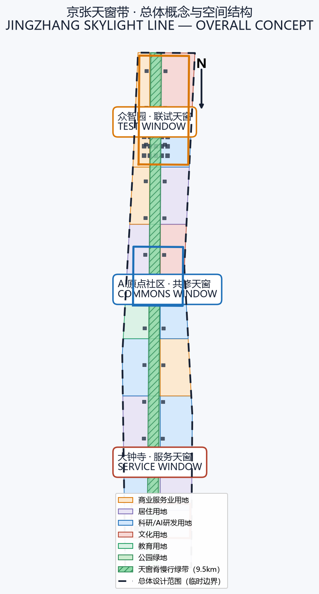
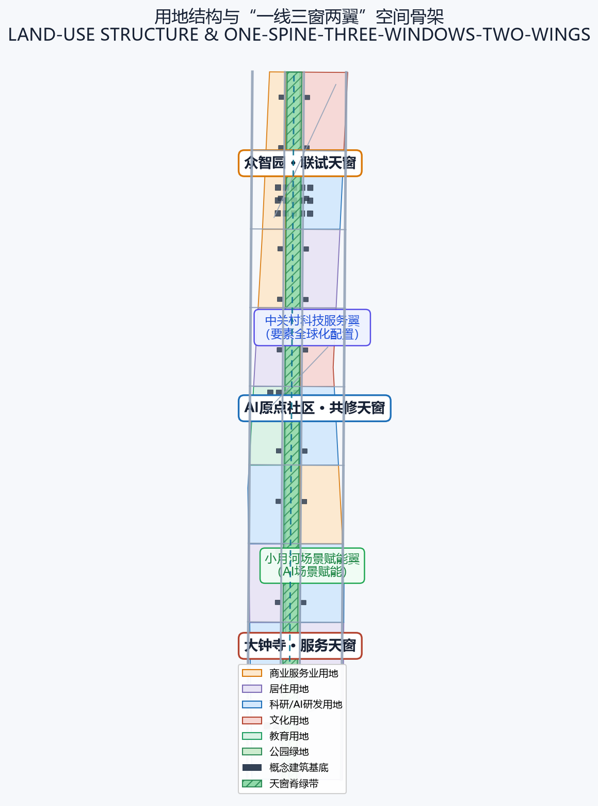
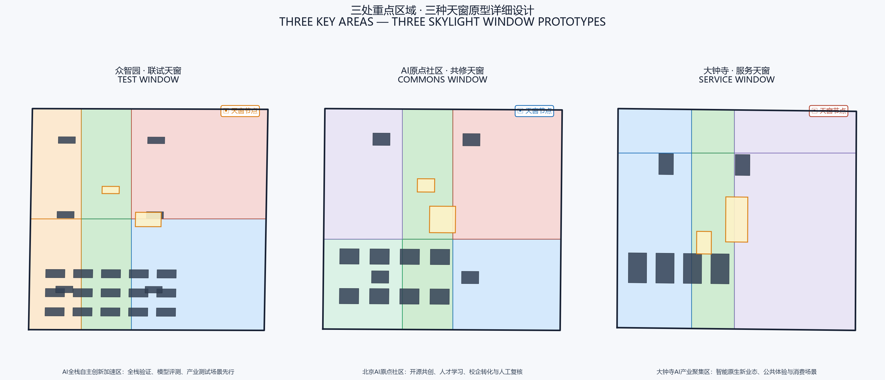
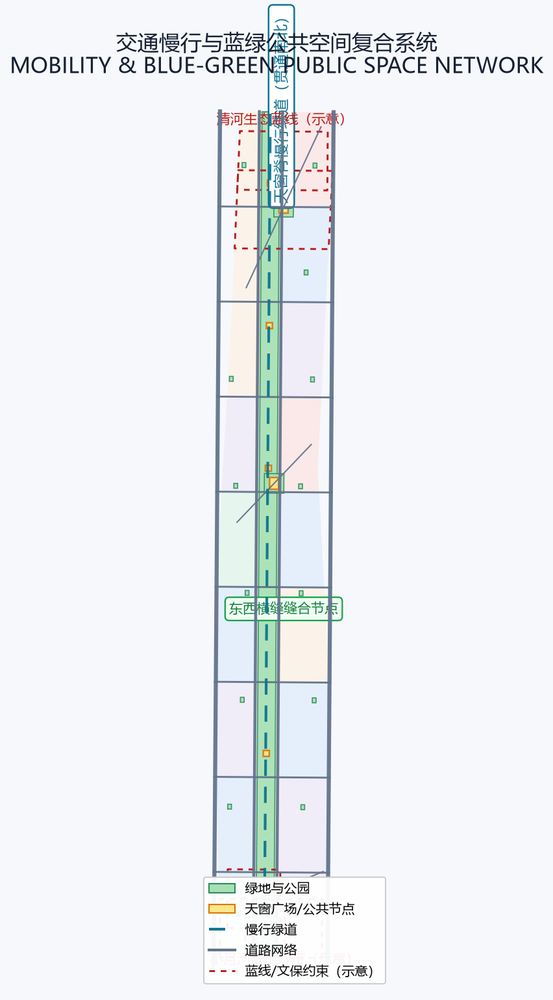
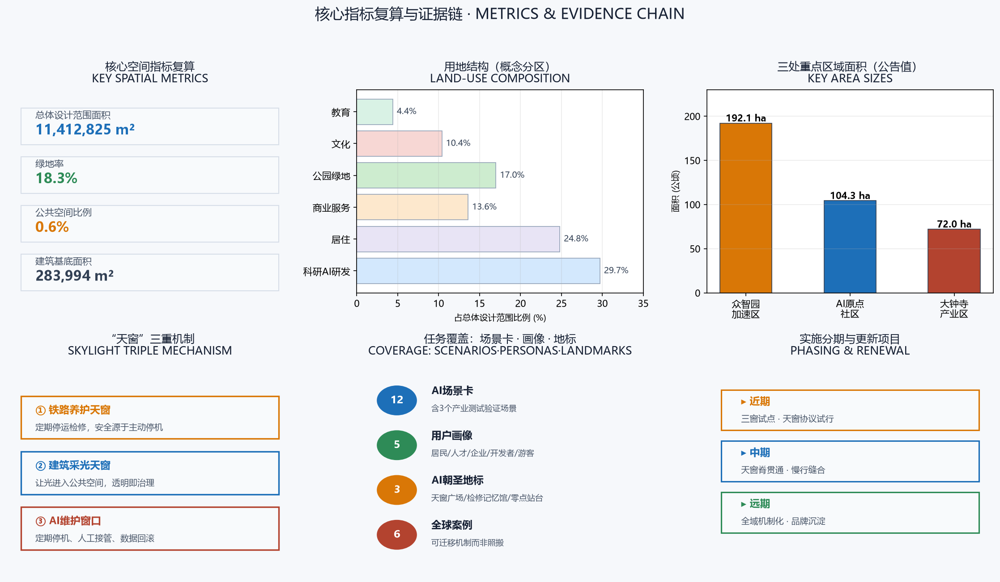

总体概念与空间结构
一线（天窗脊）三窗（联试/共修/服务）两翼（中关村科技服务翼、小月河场景赋能翼）的总体骨架，全部由提交GeoJSON派生。

科研/AI研发居住商业服务公园绿地文化天窗脊
三层范围与用地结构
统筹研究（43.6km²）→ 总体设计（11.4km²）→ 重点区域（368.4公顷）逐级落实；用地覆盖提交边界且无缝无叠。

三处重点区域 · 三种天窗原型
众智园（联试天窗）、AI原点社区（共修天窗）、大钟寺（服务天窗），每处均有定位、空间结构、建筑更新、天窗机制与实施风险。

交通慢行与蓝绿公共空间
天窗脊慢行主廊贯通南北，清河蓝线与小月河绿带横向缝合，天窗广场与口袋公园织补日常绿网。

AI场景 · 画像 · 朝圣地标
12张场景卡（含3张产业测试验证）、5类用户画像、3处AI朝圣地标，全部映射到空间与运营机制。
01 道路慢行AI诊断
天窗脊慢行绿道 · 季度停机校准测试
02 遗址公园AI导览
天窗脊沿线节点 · 每日窗口更新服务
03 无障碍AI导航
天窗广场/轨道接驳 · 双周检修服务
04 企业服务Copilot
众智园 · 灰度+月度回滚演练测试
05 公共安全运营复核
众智园联试广场 · 强制停机评测测试
06 人才生活管家
AI原点社区 · 夜间窗口+人工兜底共修
07 开源项目共修台
共修天窗广场 · 社区维护日历共修
08 智能原生消费体验
大钟寺服务广场 · 低峰检修服务
09 城市AI状态三色屏
天窗脊节点 · 停机计划公开共修
10 低碳算力驿站
众智园/脊线 · 负载窗口化测试
11 京张记忆AI策展
检修记忆馆 · 文保人工审核共修
12 全球AI活动AI助手
零点站台 · 活动后强制复盘服务
指标证据与任务覆盖
compliance_matrix覆盖公告1.3/1.4/1.5与agent.1-agent.6；standard_matrix与design_depth_matrix证明专业标准与成果深度。
